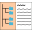
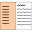
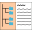
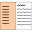

| Open or close the navigation menu."> |
 Use hierarchical navigation."/>
Use flat navigation."/>
Use hierarchical navigation."/>
Use flat navigation."/>
|
 Download a zipped copy of this manual (for
faster or offline browsing)."/>
Download a zipped copy of this manual (for
faster or offline browsing)."/>
|
|---|